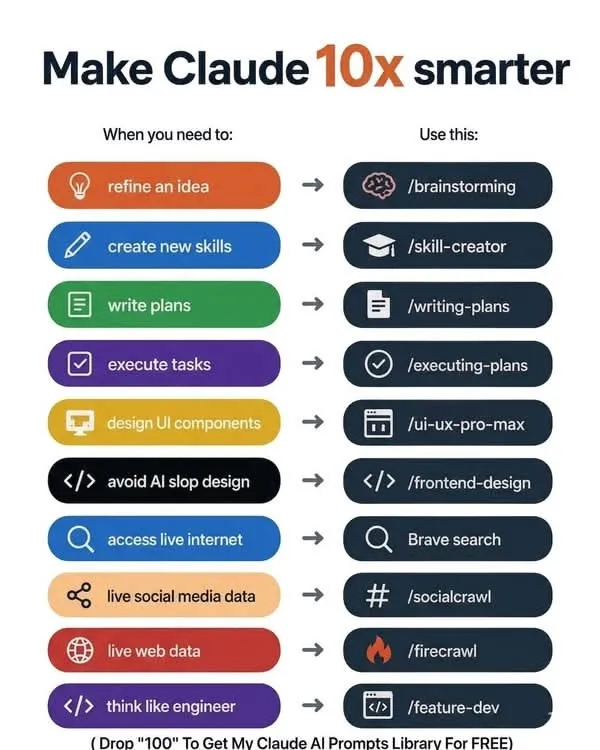

一組斜槓指令｜讓你的Claude瞬間解鎖工程師思維、即時網路、頂尖UI設計 | 白話完全解析

這張圖告訴你：只要在對話中輸入「斜槓指令」，Claude 就能瞬間切換成「頂尖工程師、UX設計師、網路爬蟲、企劃大師」等專業模式。以下我們將每個情境與指令拆解成「白話說明 + 實際應用」，讓你秒上手！
以下每一個「斜槓指令」都是讓Claude更專業的鑰匙，搭配使用效果驚人。
白話解釋： 你有一個模糊的想法或粗略概念，輸入 /brainstorming 後，Claude 會像專業創新顧問一樣，幫你延伸、發散、提煉出不同角度與可能性，甚至找出盲點。
白話解釋： 不只問問題，還能讓Claude幫你「設計一套新能力的養成計畫」。無論是想學會某項軟體、溝通技巧，或是提升某種專業，它會拆解學習步驟並提供練習框架。
白話解釋： 專案計畫、行銷排程、個人年度目標…… 只要用這個指令，Claude 會用結構化的方式為你產出「目標、資源、時間軸、風險評估」的完整計畫。
白話解釋： 有了計畫但不知如何下手？這個指令讓Claude化身專案執行教練，將大目標切分成具體、可立刻做的子任務，並提供清單、工具建議與追蹤方法。
白話解釋： 專門產生現代化、高品質的前端元件（按鈕、表單、卡片、導航列等），附帶 CSS / Tailwind 程式碼及無障礙設計建議。告別普通「AI 雜亂風格」。
白話解釋： 許多 AI 生成的版面都長得很「模板感」、缺乏細節。這個指令會讓 Claude 產生精緻、有層次、具有現代感的前端程式碼，乾淨且高度客製化。
白話解釋： 讓 Claude 能夠即時上網抓取最新資料，而不是只依賴過時的訓練數據。透過 Brave Search API，取得新聞、產品價格、即時資訊，並附上來源。
白話解釋： 分析當下流行的社群貼文、熱門話題、競爭者動態。能抓取 Twitter / Reddit / Threads 等平台的公開數據摘要，讓你即時掌握風向。
白話解釋： 比一般搜尋更深入，能夠爬取特定網站的結構化內容（例如產品規格、新聞內文、價格表），並將多個頁面統整成易讀摘要。
白話解釋： 讓Claude模擬頂尖軟體工程師的邏輯，針對功能需求進行系統分析、架構設計、演算法建議，並產出可執行的技術方案或程式碼片段。
| 💡 當你需要… | ⚡ 就用這個指令 | 📖 一句話白話功能 |
|---|---|---|
| 打磨點子 / 腦力激盪 | /brainstorming | 幫你把模糊想法變成完整創意清單 |
| 創造新技能 | /skill-creator | 設計一套從零到一的技能學習路徑 |
| 寫計畫書 | /writing-plans | 產出結構化、有時間軸的詳細計畫 |
| 執行任務 | /executing-plans | 將計畫拆解成具體每日行動步驟 |
| 設計 UI 元件 | /ui-ux-pro-max | 生成現代化、可直接複製的前端元件 |
| 避免廉價AI設計 | /frontend-design | 創造高質感、獨特的網頁介面 |
| 即時網路資訊 | /brave search | 搜尋即時新聞、產品、最新資料 |
| 社群媒體即時數據 | /socialcrawl | 爬取熱門社群趨勢與討論 |
| 深度網頁資料 | /firecrawl | 抓取特定網站結構化內容並整理 |
| 工程師思維開發 | /feature-dev | 模擬工程師邏輯，給出技術架構與程式碼 |
{kind=link}